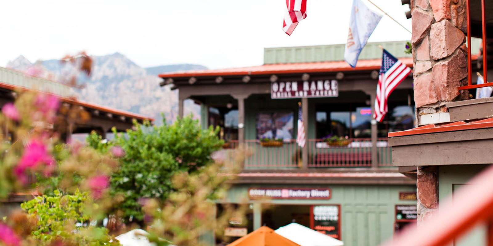
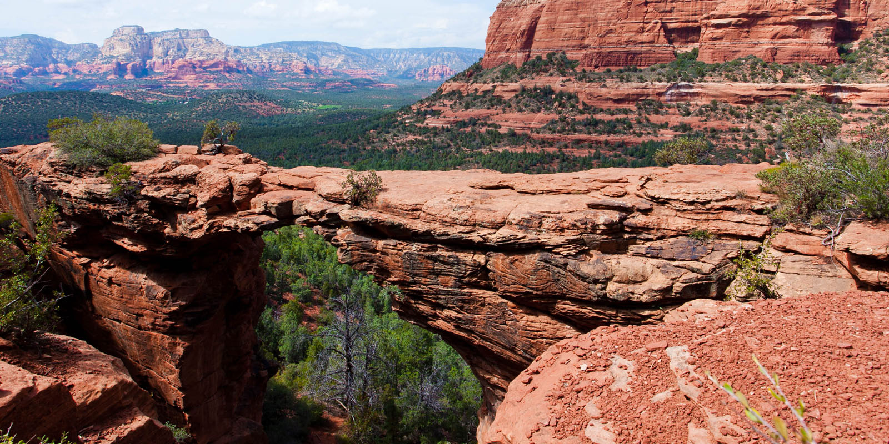

Седона — небольшой городок в Аризоне,
заслуживающий большего!
Преимущества
Рассмотрим 5 причин, по которым Седона круче, чем гранд каньон!
-
Настоящий городок
-№1-
Седона - не аттракцион для туристов,

там течёт своя жизнь -
Жильё
Рекомендуем пожить в настоящем
мотеле, всё как в кино! -
Еда
Всегда заказывайте фирменный бургер,
вы не разочаруетесь! -
Сувениры
Не только китайского, но и местного
производства! -

Там есть мост дьявола
-№2-
Да, по нему можно пройти! Если конечно
вы осмелитесь -
Небольшая площадь
-№3
Все достопримечательности
находятся очень близко -
Красивая дорога
-№4-
Ехать в Седону из Лас-Вегаса совсем
не скучно! -
Мало туристов
-№5-
Большинство едет в Гранд Каньон
и толпится там
Поиск гостиницы
Заинтересовались?
Укажите предполагаемые даты поездки,
и мы покажем вам лучшие предложения гостиниц в седоне